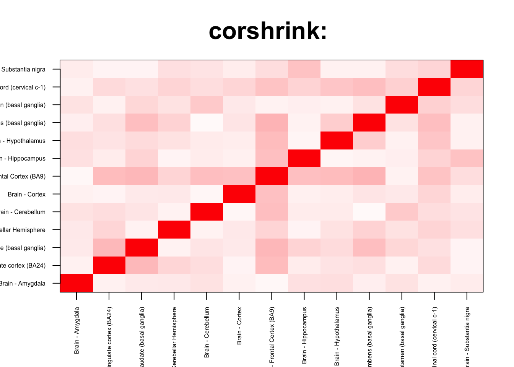
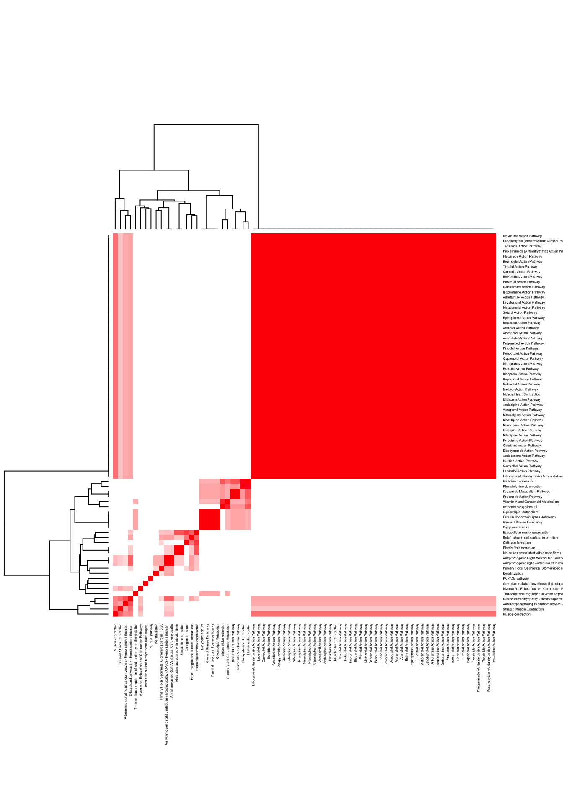

We check for enrichment analysis inside the brain
corshrink_data <- get(load("../output/ash_cor_only_voom_pearson_halfuniform_gtex_tissues.rda"))
cor_data <- get(load("../output/cor_tissues_non_ash_voom_pearson.rda"))common_samples <- get(load("../output/common_samples.rda"))
tissue_labels <- read.table(file = "../data/GTEX_V6/samples_id.txt")[,3]
#library(data.table)
#data <- data.frame(fread("../data/GTEX_V6/cis_gene_expression.txt"))
#matdata <- t(data[,-c(1,2)])
gene_names <- as.character(read.table(file = "../data/GTEX_V6/gene_names_GTEX_V6.txt")[,1])
gene_names_1 <- as.character(sapply(gene_names, function(x) return(strsplit(x, "[.]")[[1]][1])))
U <- unique(tissue_labels)tab <- array(0, dim(corshrink_data)[3])
for(m in 1:dim(corshrink_data)[3]){
temp <- corshrink_data[order_index[1:13], order_index[(1:13)],m]
tab[m] <- (quantile(temp[row(temp) > col(temp)], 0.5))
}
ordering_high <- order(tab, decreasing = TRUE)[1:1000]
ordering_low <- order(tab, decreasing = FALSE)[1:1000]top_gene <- gene_names_1[ordering_high[1]]
col=c(rev(rgb(seq(1,0,length=1000),1,seq(1,0,length=1000))),
rgb(1,seq(1,0,length=1000),seq(1,0,length=1000)))
image(as.matrix(corshrink_data[order_index[1:13],order_index[1:13], ordering_high[1000]]),
col=col, main=paste0("corshrink: "), cex.main=2,
xaxt = "n", yaxt = "n", zlim=c(-1,1))
axis(1, at = seq(0, 1, length.out = 13), labels = U[order_index[1:13]], las=2, cex.axis = 0.5)
axis(2, at = seq(0, 1, length.out = 13), labels = U[order_index[1:13]], las=2, cex.axis = 0.5)
bottom_gene <- gene_names_1[ordering_low[10]]
col=c(rev(rgb(seq(1,0,length=1000),1,seq(1,0,length=1000))),
rgb(1,seq(1,0,length=1000),seq(1,0,length=1000)))
image(as.matrix(corshrink_data[order_index[1:13],order_index[1:13], ordering_low[1000]]),
col=col, main=paste0("corshrink: "), cex.main=2,
xaxt = "n", yaxt = "n", zlim=c(-1,1))
axis(1, at = seq(0, 1, length.out = 13), labels = U[order_index[1:13]], las=2, cex.axis = 0.5)
axis(2, at = seq(0, 1, length.out = 13), labels = U[order_index[1:13]], las=2, cex.axis = 0.5)
high_inside_brain_genes <- gene_names_1[ordering_high]
low_inside_brain_genes <- gene_names_1[ordering_low]
write.table(cbind.data.frame(high_inside_brain_genes), quote = FALSE, file = "../utilities/inside_brain/high_inside_brain.txt", row.names = FALSE, col.names = FALSE)
write.table(cbind.data.frame(low_inside_brain_genes), quote = FALSE, file = "../utilities/inside_brain/low_inside_brain.txt", row.names = FALSE, col.names = FALSE)tab <- read.delim("../utilities/inside_brain/pathway_high.tab")
head(cbind.data.frame(tab$pathway, tab$q.value), 100)## tab$pathway
## 1 TNF signaling pathway - Homo sapiens (human)
## 2 Legionellosis - Homo sapiens (human)
## 3 Validated transcriptional targets of AP1 family members Fra1 and Fra2
## 4 Staphylococcus aureus infection - Homo sapiens (human)
## 5 Immune System
## 6 Pertussis - Homo sapiens (human)
## 7 Herpes simplex infection - Homo sapiens (human)
## 8 Influenza A - Homo sapiens (human)
## 9 Attenuation phase
## 10 Epstein-Barr virus infection - Homo sapiens (human)
## 11 Antigen processing and presentation - Homo sapiens (human)
## 12 HSF1 activation
## 13 Allograft Rejection
## 14 HTLV-I infection - Homo sapiens (human)
## 15 HSF1-dependent transactivation
## 16 Th17 cell differentiation - Homo sapiens (human)
## 17 AP-1 transcription factor network
## 18 IL6-mediated signaling events
## 19 Cellular response to heat stress
## 20 Binding and Uptake of Ligands by Scavenger Receptors
## 21 Leishmaniasis - Homo sapiens (human)
## 22 Oncostatin M Signaling Pathway
## 23 Photodynamic therapy-induced NF-kB survival signaling
## 24 Senescence and Autophagy in Cancer
## 25 Nuclear Receptors Meta-Pathway
## 26 Cellular responses to stress
## 27 Spinal Cord Injury
## 28 Tacrolimus/Cyclosporine Pathway, Pharmacodynamics
## 29 Neutrophil degranulation
## 30 Osteoclast differentiation - Homo sapiens (human)
## 31 Regulation of HSF1-mediated heat shock response
## 32 Apoptosis Modulation and Signaling
## 33 Apoptosis Modulation and Signaling
## 34 Apoptosis Modulation and Signaling
## 35 NF-kappa B signaling pathway - Homo sapiens (human)
## 36 Graft-versus-host disease - Homo sapiens (human)
## 37 Inflammatory bowel disease (IBD) - Homo sapiens (human)
## 38 Photodynamic therapy-induced unfolded protein response
## 39 Type I diabetes mellitus - Homo sapiens (human)
## 40 Rheumatoid arthritis - Homo sapiens (human)
## 41 ATF6-alpha activates chaperone genes
## 42 MAPK signaling pathway - Homo sapiens (human)
## 43 Phagosome - Homo sapiens (human)
## 44 Hematopoietic cell lineage - Homo sapiens (human)
## 45 Transcriptional misregulation in cancer - Homo sapiens (human)
## 46 Folate Metabolism
## 47 MAPK Signaling Pathway
## 48 Systemic lupus erythematosus - Homo sapiens (human)
## 49 Complement and Coagulation Cascades
## 50 AGE-RAGE signaling pathway in diabetic complications - Homo sapiens (human)
## 51 Dengue-2 Interactions with Complement and Coagulation Cascades
## 52 Vitamin B12 Metabolism
## 53 Innate Immune System
## 54 IL12-mediated signaling events
## 55 Glucocorticoid receptor regulatory network
## 56 Chagas disease (American trypanosomiasis) - Homo sapiens (human)
## 57 Apoptosis - Homo sapiens (human)
## 58 Complement Activation
## 59 Toxoplasmosis - Homo sapiens (human)
## 60 Cellular response to heat stress
## 61 Lung fibrosis
## 62 Type II interferon signaling (IFNG)
## 63 Allograft rejection - Homo sapiens (human)
## 64 NOD-like receptor signaling pathway - Homo sapiens (human)
## 65 Vitamin D Receptor Pathway
## 66 signal transduction through il1r
## 67 JAK STAT MolecularVariation 1
## 68 Thymic Stromal LymphoPoietin (TSLP) Signaling Pathway
## 69 Oncostatin_M
## 70 Antigen Presentation: Folding, assembly and peptide loading of class I MHC
## 71 Scavenging of heme from plasma
## 72 Complement and coagulation cascades - Homo sapiens (human)
## 73 Malaria - Homo sapiens (human)
## 74 Hepatitis C and Hepatocellular Carcinoma
## 75 Photodynamic therapy-induced AP-1 survival signaling.
## 76 TNF related weak inducer of apoptosis (TWEAK) Signaling Pathway
## 77 Glucocorticoid Receptor Pathway
## 78 MyD88:Mal cascade initiated on plasma membrane
## 79 Toll Like Receptor TLR1:TLR2 Cascade
## 80 Toll Like Receptor TLR6:TLR2 Cascade
## 81 Toll Like Receptor 2 (TLR2) Cascade
## 82 il 6 signaling pathway
## 83 Direct p53 effectors
## 84 Structural Pathway of Interleukin 1 (IL-1)
## 85 IL-4 Signaling Pathway
## 86 IL6
## 87 classical complement pathway
## 88 toll-like receptor pathway
## 89 IL23-mediated signaling events
## 90 VEGFA-VEGFR2 Signaling Pathway
## 91 Intestinal immune network for IgA production - Homo sapiens (human)
## 92 Toll-Like Receptors Cascades
## 93 Toll-like Receptor Signaling Pathway
## 94 HIF-1 signaling pathway - Homo sapiens (human)
## 95 Viral myocarditis - Homo sapiens (human)
## 96 Activated TLR4 signalling
## 97 BCR
## 98 Regulation of toll-like receptor signaling pathway
## 99 Mammary gland development pathway - Involution (Stage 4 of 4)
## 100 Antigen processing-Cross presentation
## tab$q.value
## 1 5.372551e-11
## 2 2.038117e-10
## 3 2.873577e-10
## 4 1.258757e-09
## 5 3.523998e-09
## 6 4.860441e-09
## 7 5.159523e-09
## 8 5.286502e-09
## 9 5.629453e-09
## 10 6.024888e-09
## 11 1.048229e-08
## 12 1.188824e-08
## 13 4.927717e-08
## 14 5.699356e-08
## 15 1.306481e-07
## 16 2.067192e-07
## 17 2.761094e-07
## 18 2.815496e-07
## 19 2.815496e-07
## 20 2.815496e-07
## 21 2.815496e-07
## 22 4.039872e-07
## 23 5.137482e-07
## 24 5.730358e-07
## 25 5.787175e-07
## 26 5.792440e-07
## 27 6.579039e-07
## 28 7.810295e-07
## 29 8.198171e-07
## 30 8.198171e-07
## 31 1.277681e-06
## 32 1.447957e-06
## 33 1.447957e-06
## 34 1.447957e-06
## 35 1.678230e-06
## 36 1.817740e-06
## 37 1.844971e-06
## 38 2.410835e-06
## 39 4.111336e-06
## 40 4.295075e-06
## 41 4.384504e-06
## 42 8.615211e-06
## 43 1.139644e-05
## 44 1.204003e-05
## 45 1.204003e-05
## 46 1.279396e-05
## 47 1.385831e-05
## 48 1.490001e-05
## 49 1.965918e-05
## 50 2.285633e-05
## 51 2.321338e-05
## 52 2.357078e-05
## 53 2.553464e-05
## 54 2.642112e-05
## 55 2.642112e-05
## 56 3.124531e-05
## 57 3.274507e-05
## 58 4.070302e-05
## 59 4.093565e-05
## 60 4.128456e-05
## 61 4.128456e-05
## 62 4.128456e-05
## 63 4.128456e-05
## 64 4.305128e-05
## 65 4.590405e-05
## 66 5.151935e-05
## 67 5.469352e-05
## 68 5.501739e-05
## 69 6.384066e-05
## 70 7.207384e-05
## 71 7.753031e-05
## 72 7.844513e-05
## 73 7.844513e-05
## 74 7.844513e-05
## 75 9.480307e-05
## 76 9.480307e-05
## 77 9.480307e-05
## 78 9.480307e-05
## 79 9.480307e-05
## 80 9.480307e-05
## 81 9.480307e-05
## 82 1.203094e-04
## 83 1.233839e-04
## 84 1.698086e-04
## 85 1.859447e-04
## 86 1.908957e-04
## 87 1.915058e-04
## 88 1.978750e-04
## 89 2.491463e-04
## 90 2.632399e-04
## 91 2.924814e-04
## 92 2.980981e-04
## 93 3.002007e-04
## 94 3.346329e-04
## 95 3.405860e-04
## 96 3.515256e-04
## 97 3.565923e-04
## 98 3.846142e-04
## 99 3.846142e-04
## 100 3.920655e-04pathway2 <- read.delim("../utilities/inside_brain/pathway_high.tab")
maxpath = 75
pathway <- pathway2[1:min(maxpath, dim(pathway2)[1]), ]
ensembl_genes <- pathway$members_input_overlap
pathway_list_genes <- sapply(ensembl_genes, function(x) return(strsplit(as.character(x), "; ")))
all_genes <- Reduce(union, pathway_list_genes)
pathway_mat <- matrix(0, length(pathway_list_genes), length(all_genes))
for(l in 1:dim(pathway_mat)[1]){
pathway_mat[l, match(pathway_list_genes[[l]], all_genes)] <- 1
}
pathway_bimat <- (pathway_mat)%*%t(pathway_mat)
pathway_bimat_prop <- diag(1/sqrt(diag(pathway_bimat)), dim(pathway_bimat)[1]) %*% pathway_bimat %*% diag(1/sqrt(diag(pathway_bimat)), dim(pathway_bimat)[1])
col=c(rev(rgb(seq(1,0,length=1000),1,seq(1,0,length=1000))),
rgb(1,seq(1,0,length=1000),seq(1,0,length=1000)))
heatmap(pathway_bimat_prop, labRow = pathway$pathway, labCol = pathway$pathway, cexRow = 0.3, cexCol = 0.3, col = col, zlim = c(-1,1),
scale = "none", margins = c(5, 5))tab <- read.delim("../utilities/inside_brain/GO_high.tab")
head(cbind.data.frame(tab$term_name, tab$q.value), 100)## tab$term_name
## 1 response to stress
## 2 defense response
## 3 response to cytokine
## 4 immune response
## 5 response to biotic stimulus
## 6 response to external biotic stimulus
## 7 response to other organism
## 8 response to organic substance
## 9 cellular response to cytokine stimulus
## 10 cell death
## 11 regulation of response to stress
## 12 cellular response to chemical stimulus
## 13 innate immune response
## 14 regulation of cell death
## 15 cytokine-mediated signaling pathway
## 16 cellular response to organic substance
## 17 response to external stimulus
## 18 cytokine production
## 19 response to temperature stimulus
## 20 programmed cell death
## 21 response to topologically incorrect protein
## 22 response to unfolded protein
## 23 apoptotic process
## 24 cellular response to stress
## 25 regulation of immune system process
## 26 regulation of cytokine production
## 27 regulation of programmed cell death
## 28 apoptotic signaling pathway
## 29 positive regulation of immune system process
## 30 interferon-gamma-mediated signaling pathway
## 31 response to lipopolysaccharide
## 32 response to molecule of bacterial origin
## 33 response to bacterium
## 34 immune effector process
## 35 inflammatory response
## 36 response to chemical
## 37 regulation of response to stimulus
## 38 response to interferon-gamma
## 39 response to heat
## 40 response to abiotic stimulus
## 41 chaperone binding
## 42 regulation of defense response
## 43 regulation of immune response
## 44 type I interferon signaling pathway
## 45 negative regulation of cell death
## 46 unfolded protein binding
## 47 positive regulation of cytokine production
## 48 protein folding
## 49 response to type I interferon
## 50 response to virus
## 51 defense response to other organism
## 52 positive regulation of response to stimulus
## 53 positive regulation of biological process
## 54 response to inorganic substance
## 55 intrinsic apoptotic signaling pathway
## 56 regulation of angiogenesis
## 57 negative regulation of biological process
## 58 positive regulation of cellular process
## 59 MHC protein complex
## 60 regulation of vasculature development
## 61 lumenal side of endoplasmic reticulum membrane
## 62 integral component of lumenal side of endoplasmic reticulum membrane
## 63 adaptive immune response based on somatic recombination of immune receptors built from immunoglobulin superfamily domains
## 64 response to lipid
## 65 cellular response to biotic stimulus
## 66 defense response to virus
## 67 peptide antigen binding
## 68 cytoplasmic part
## 69 extrinsic apoptotic signaling pathway
## 70 blood vessel development
## 71 regulation of cellular response to stress
## 72 positive regulation of multicellular organismal process
## 73 regulation of protein metabolic process
## 74 blood vessel morphogenesis
## 75 regulation of apoptotic signaling pathway
## 76 angiogenesis
## 77 positive regulation of immune response
## 78 vasculature development
## 79 ER-nucleus signaling pathway
## 80 membrane-bounded organelle
## 81 cardiovascular system development
## 82 positive regulation of cell death
## 83 positive regulation of cellular metabolic process
## 84 regulation of response to external stimulus
## 85 cellular response to molecule of bacterial origin
## 86 positive regulation of nitrogen compound metabolic process
## 87 intracellular membrane-bounded organelle
## 88 leukocyte mediated immunity
## 89 immune system development
## 90 cellular response to heat
## 91 positive regulation of defense response
## 92 protein binding
## 93 regulation of innate immune response
## 94 transcription factor activity, RNA polymerase II core promoter proximal region sequence-specific binding
## 95 adaptive immune response
## 96 endocytic vesicle
## 97 positive regulation of macromolecule metabolic process
## 98 cellular response to external stimulus
## 99 response to oxygen-containing compound
## 100 hemopoiesis
## tab$q.value
## 1 1.682741e-28
## 2 8.336124e-21
## 3 1.435690e-18
## 4 9.318969e-20
## 5 1.172075e-19
## 6 5.418048e-18
## 7 1.053307e-17
## 8 1.097675e-16
## 9 6.742833e-15
## 10 1.800450e-15
## 11 6.958603e-15
## 12 3.417098e-15
## 13 5.414285e-15
## 14 2.808741e-14
## 15 6.776867e-14
## 16 2.002881e-13
## 17 5.615571e-14
## 18 1.695715e-13
## 19 4.416381e-13
## 20 1.088739e-12
## 21 7.274721e-13
## 22 1.747280e-12
## 23 6.529453e-12
## 24 9.708693e-13
## 25 9.708693e-13
## 26 2.862869e-12
## 27 8.177822e-12
## 28 2.111194e-12
## 29 5.370801e-12
## 30 1.418819e-11
## 31 7.201939e-12
## 32 7.328404e-12
## 33 1.655024e-11
## 34 2.558182e-12
## 35 1.452384e-11
## 36 5.065391e-12
## 37 1.296587e-11
## 38 5.159846e-11
## 39 1.523488e-11
## 40 1.495990e-11
## 41 3.075152e-10
## 42 6.754612e-10
## 43 9.597579e-10
## 44 1.500075e-09
## 45 1.866065e-09
## 46 1.604929e-09
## 47 2.438078e-09
## 48 4.710390e-10
## 49 2.836529e-09
## 50 2.836529e-09
## 51 5.770301e-09
## 52 9.786611e-09
## 53 7.816935e-09
## 54 1.676763e-08
## 55 3.927659e-08
## 56 7.378753e-08
## 57 3.513587e-08
## 58 9.039856e-08
## 59 2.287440e-07
## 60 1.761818e-07
## 61 6.167035e-07
## 62 2.411171e-07
## 63 2.496084e-07
## 64 3.322993e-07
## 65 1.956782e-07
## 66 2.043471e-07
## 67 4.829895e-07
## 68 8.481230e-07
## 69 5.453558e-07
## 70 3.172600e-07
## 71 6.222669e-07
## 72 7.765295e-07
## 73 1.269395e-06
## 74 6.468759e-07
## 75 1.755683e-06
## 76 7.911870e-07
## 77 1.770134e-06
## 78 1.651111e-06
## 79 9.518954e-07
## 80 5.046023e-06
## 81 2.302375e-06
## 82 3.019928e-06
## 83 3.019928e-06
## 84 2.610724e-06
## 85 2.610724e-06
## 86 3.374871e-06
## 87 4.237726e-06
## 88 2.290144e-06
## 89 1.413264e-06
## 90 3.997249e-06
## 91 4.987315e-06
## 92 6.955470e-06
## 93 5.687784e-06
## 94 3.455016e-05
## 95 3.807607e-06
## 96 6.344936e-06
## 97 8.220112e-06
## 98 4.210196e-06
## 99 4.210196e-06
## 100 8.285900e-06tab <- read.delim("../utilities/inside_brain/pathway_low.tab")
head(cbind.data.frame(tab$pathway, tab$q.value), 100)## tab$pathway
## 1 Familial lipoprotein lipase deficiency
## 2 Glycerolipid Metabolism
## 3 Glycerol Kinase Deficiency
## 4 D-glyceric acidura
## 5 Primary Focal Segmental Glomerulosclerosis FSGS
## 6 Myometrial Relaxation and Contraction Pathways
## 7 Molecules associated with elastic fibres
## 8 Dilated cardiomyopathy - Homo sapiens (human)
## 9 Ifosfamide Action Pathway
## 10 Ifosfamide Metabolism Pathway
## 11 Muscle contraction
## 12 Arrhythmogenic right ventricular cardiomyopathy (ARVC) - Homo sapiens (human)
## 13 retinoate biosynthesis I
## 14 Elastic fibre formation
## 15 Arrhythmogenic Right Ventricular Cardiomyopathy
## 16 Extracellular matrix organization
## 17 Striated Muscle Contraction
## 18 Histidine degradation
## 19 Fosphenytoin (Antiarrhythmic) Action Pathway
## 20 Mexiletine Action Pathway
## 21 Tocainide Action Pathway
## 22 Procainamide (Antiarrhythmic) Action Pathway
## 23 Flecainide Action Pathway
## 24 Bopindolol Action Pathway
## 25 Timolol Action Pathway
## 26 Carteolol Action Pathway
## 27 Bevantolol Action Pathway
## 28 Practolol Action Pathway
## 29 Dobutamine Action Pathway
## 30 Isoprenaline Action Pathway
## 31 Arbutamine Action Pathway
## 32 Levobunolol Action Pathway
## 33 Metipranolol Action Pathway
## 34 Sotalol Action Pathway
## 35 Epinephrine Action Pathway
## 36 Betaxolol Action Pathway
## 37 Atenolol Action Pathway
## 38 Alprenolol Action Pathway
## 39 Acebutolol Action Pathway
## 40 Propranolol Action Pathway
## 41 Pindolol Action Pathway
## 42 Penbutolol Action Pathway
## 43 Oxprenolol Action Pathway
## 44 Metoprolol Action Pathway
## 45 Esmolol Action Pathway
## 46 Bisoprolol Action Pathway
## 47 Bupranolol Action Pathway
## 48 Nebivolol Action Pathway
## 49 Nadolol Action Pathway
## 50 Muscle/Heart Contraction
## 51 Diltiazem Action Pathway
## 52 Amlodipine Action Pathway
## 53 Verapamil Action Pathway
## 54 Nitrendipine Action Pathway
## 55 Nisoldipine Action Pathway
## 56 Nimodipine Action Pathway
## 57 Isradipine Action Pathway
## 58 Nifedipine Action Pathway
## 59 Felodipine Action Pathway
## 60 Quinidine Action Pathway
## 61 Disopyramide Action Pathway
## 62 Amiodarone Action Pathway
## 63 Ibutilide Action Pathway
## 64 Carvedilol Action Pathway
## 65 Labetalol Action Pathway
## 66 Lidocaine (Antiarrhythmic) Action Pathway
## 67 Vitamin A and Carotenoid Metabolism
## 68 Phenylalanine degradation
## 69 Beta1 integrin cell surface interactions
## 70 dermatan sulfate biosynthesis (late stages)
## 71 Collagen formation
## 72 PCP/CE pathway
## 73 Transcriptional regulation of white adipocyte differentiation
## 74 Adrenergic signaling in cardiomyocytes - Homo sapiens (human)
## 75 Keratinization
## 76 Calcium signaling pathway - Homo sapiens (human)
## 77 glycerol degradation
## 78 Tyrosine metabolism
## 79 Phenylalanine metabolism - Homo sapiens (human)
## 80 Tyrosine metabolism - Homo sapiens (human)
## 81 Phenytoin (Antiarrhythmic) Action Pathway
## 82 Hypertrophic cardiomyopathy (HCM) - Homo sapiens (human)
## 83 G13 Signaling Pathway
## 84 Ifosfamide Pathway, Pharmacokinetics
## 85 Cell adhesion molecules (CAMs) - Homo sapiens (human)
## 86 Downregulation of SMAD2/3:SMAD4 transcriptional activity
## 87 Chylomicron-mediated lipid transport
## tab$q.value
## 1 0.01181795
## 2 0.01181795
## 3 0.01181795
## 4 0.01181795
## 5 0.01181795
## 6 0.01253269
## 7 0.01253269
## 8 0.01253269
## 9 0.01253269
## 10 0.01253269
## 11 0.01253269
## 12 0.01253269
## 13 0.01253269
## 14 0.01253269
## 15 0.01253269
## 16 0.01253269
## 17 0.01253269
## 18 0.01253269
## 19 0.01253269
## 20 0.01253269
## 21 0.01253269
## 22 0.01253269
## 23 0.01253269
## 24 0.01253269
## 25 0.01253269
## 26 0.01253269
## 27 0.01253269
## 28 0.01253269
## 29 0.01253269
## 30 0.01253269
## 31 0.01253269
## 32 0.01253269
## 33 0.01253269
## 34 0.01253269
## 35 0.01253269
## 36 0.01253269
## 37 0.01253269
## 38 0.01253269
## 39 0.01253269
## 40 0.01253269
## 41 0.01253269
## 42 0.01253269
## 43 0.01253269
## 44 0.01253269
## 45 0.01253269
## 46 0.01253269
## 47 0.01253269
## 48 0.01253269
## 49 0.01253269
## 50 0.01253269
## 51 0.01253269
## 52 0.01253269
## 53 0.01253269
## 54 0.01253269
## 55 0.01253269
## 56 0.01253269
## 57 0.01253269
## 58 0.01253269
## 59 0.01253269
## 60 0.01253269
## 61 0.01253269
## 62 0.01253269
## 63 0.01253269
## 64 0.01322781
## 65 0.01322781
## 66 0.01407900
## 67 0.01407900
## 68 0.01703997
## 69 0.01862405
## 70 0.01980790
## 71 0.02026747
## 72 0.02149718
## 73 0.02431292
## 74 0.02431292
## 75 0.02704626
## 76 0.02705547
## 77 0.02961703
## 78 0.03084251
## 79 0.03287674
## 80 0.03730076
## 81 0.04348310
## 82 0.04554597
## 83 0.04837921
## 84 0.05552572
## 85 0.05570037
## 86 0.05570037
## 87 0.06282711pathway2 <- read.delim("../utilities/inside_brain/pathway_low.tab")
maxpath = 75
pathway <- pathway2[1:min(maxpath, dim(pathway2)[1]), ]
ensembl_genes <- pathway$members_input_overlap
pathway_list_genes <- sapply(ensembl_genes, function(x) return(strsplit(as.character(x), "; ")))
all_genes <- Reduce(union, pathway_list_genes)
pathway_mat <- matrix(0, length(pathway_list_genes), length(all_genes))
for(l in 1:dim(pathway_mat)[1]){
pathway_mat[l, match(pathway_list_genes[[l]], all_genes)] <- 1
}
pathway_bimat <- (pathway_mat)%*%t(pathway_mat)
pathway_bimat_prop <- diag(1/sqrt(diag(pathway_bimat)), dim(pathway_bimat)[1]) %*% pathway_bimat %*% diag(1/sqrt(diag(pathway_bimat)), dim(pathway_bimat)[1])
col=c(rev(rgb(seq(1,0,length=1000),1,seq(1,0,length=1000))),
rgb(1,seq(1,0,length=1000),seq(1,0,length=1000)))
heatmap(pathway_bimat_prop, labRow = pathway$pathway, labCol = pathway$pathway, cexRow = 0.3, cexCol = 0.3, col = col, zlim = c(-1,1),
scale = "none", margins = c(5, 5))
tab <- read.delim("../utilities/inside_brain/GO_low.tab")
head(cbind.data.frame(tab$term_name, tab$q.value), 100)## tab$term_name tab$q.value
## 1 contractile fiber part 2.678433e-08
## 2 contractile fiber 1.373839e-07
## 3 I band 3.594807e-07
## 4 sarcomere 1.014088e-06
## 5 single-organism developmental process 1.565460e-06
## 6 Z disc 1.284400e-06
## 7 anatomical structure development 2.127914e-06
## 8 cell differentiation 6.365299e-05
## 9 myofibril 4.113129e-06
## 10 cellular developmental process 3.498135e-05
## 11 vesicle 3.012309e-06
## 12 supramolecular polymer 5.141209e-06
## 13 protein binding 7.426775e-06
## 14 actin filament-based process 3.498135e-05
## 15 extracellular exosome 1.275563e-05
## 16 muscle structure development 3.498135e-05
## 17 extracellular vesicle 7.383098e-06
## 18 extracellular organelle 8.567307e-06
## 19 cell development 3.498135e-05
## 20 muscle system process 4.681758e-05
## 21 supramolecular fiber 1.450047e-05
## 22 cytoskeletal protein binding 7.322764e-05
## 23 cytoskeleton organization 2.839095e-04
## 24 system development 8.977080e-05
## 25 cell-cell junction 3.878355e-05
## 26 calmodulin binding 9.804672e-05
## 27 multicellular organism development 1.692221e-04
## 28 anchoring junction 5.928941e-05
## 29 adherens junction 8.792201e-05
## 30 muscle tissue development 1.187827e-03
## 31 actomyosin structure organization 3.337410e-03
## 32 tissue development 4.860885e-04
## 33 actin filament-based movement 1.852815e-03
## 34 actin-mediated cell contraction 3.337410e-03
## 35 cell projection organization 6.380087e-04
## 36 regulation of cell projection organization 3.395529e-03
## 37 actin cytoskeleton organization 3.057703e-03
## 38 single-multicellular organism process 6.179176e-04
## 39 anatomical structure morphogenesis 6.179176e-04
## 40 plasma membrane 4.543185e-04
## 41 striated muscle tissue development 3.741963e-03
## 42 regulation of nervous system development 3.741963e-03
## 43 cell periphery 4.543185e-04
## 44 single-organism cellular process 6.520921e-04
## 45 cellular component organization 6.520921e-04
## 46 actin-based cell projection 8.250326e-04
## 47 muscle contraction 6.417748e-03
## 48 muscle cell differentiation 5.311042e-03
## 49 muscle organ development 6.417748e-03
## 50 actin cytoskeleton 1.444060e-03
## 51 protein complex binding 2.327374e-03
## 52 cell-cell adherens junction 1.063660e-03
## 53 cytoskeleton 2.762495e-03
## 54 regulation of multicellular organismal process 3.264311e-03
## 55 actin binding 1.103836e-02
## 56 epithelial cell differentiation 8.457677e-03
## 57 regulation of cell differentiation 1.040152e-02
## 58 sarcolemma 1.763543e-03
## 59 extracellular matrix organization 1.081132e-02
## 60 extracellular structure organization 5.340112e-03
## 61 junctional membrane complex 2.344656e-03
## 62 regulation of localization 7.753408e-03
## 63 basolateral plasma membrane 2.622686e-03
## 64 response to retinoic acid 1.855849e-02
## 65 heart development 8.459110e-03
## 66 regulation of calcium ion binding 2.028094e-02
## 67 negative regulation of calcium ion binding 2.026072e-02
## 68 striated muscle cell development 2.026072e-02
## 69 PDZ domain binding 2.054990e-02
## 70 tissue morphogenesis 1.032923e-02
## 71 plasma membrane part 4.102834e-03
## 72 regulation of muscle system process 2.076799e-02
## 73 neurogenesis 2.076799e-02
## 74 formation of primary germ layer 1.131055e-02
## 75 complex of collagen trimers 4.102834e-03
## 76 supramolecular fiber organization 1.168933e-02
## 77 extracellular matrix component 4.102834e-03
## 78 myofibril assembly 2.979183e-02
## 79 regulation of cell development 2.547846e-02
## 80 animal organ development 1.337124e-02
## 81 circulatory system development 3.028904e-02
## 82 cellular component morphogenesis 1.375495e-02
## 83 plasma membrane region 5.148099e-03
## 84 cellular component maintenance 1.404501e-02
## 85 muscle cell development 3.069052e-02
## 86 fascia adherens 1.442575e-02
## 87 junctional sarcoplasmic reticulum membrane 1.442575e-02
## 88 sarcoplasmic reticulum membrane 6.569680e-03
## 89 neuron projection development 3.069052e-02
## 90 epithelium development 3.069052e-02
## 91 apical junction complex 6.813387e-03
## 92 nervous system development 3.069052e-02
## 93 skin development 3.069052e-02
## 94 cell-cell signaling 1.643957e-02
## 95 regulation of cell morphogenesis 3.826422e-02
## 96 regulation of system process 3.327050e-02
## 97 collagen type V trimer 1.459335e-02
## 98 integrin alpha8-beta1 complex 1.459335e-02
## 99 establishment or maintenance of cell polarity 1.842941e-02
## 100 regulation of developmental process 1.842941e-02This R Markdown site was created with workflowr